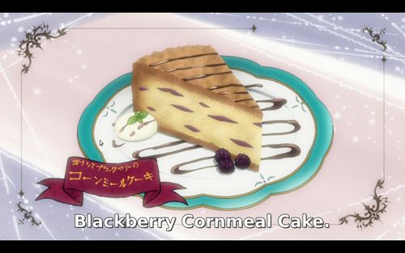

Home

Blackberry Cornmeal Cake
The Blackberry Cornmeal Cake is a delightful fusion of flavors and textures, marrying the tender crumb of traditional cake with the rustic charm of cornmeal. Each bite offers a burst of sweetness from the juicy blackberries, perfectly balanced by the subtle crunch of cornmeal. The moist and buttery cake, infused with hints of vanilla, provides a comforting backdrop for the vibrant burst of fresh fruit. With its golden exterior and speckled with jewel-toned blackberries, this cake is not only a feast for the taste buds but also a visual delight, inviting you to savor every moment of its simple yet elegant indulgence.
Ingredients
- 1 Cup Cornmeal
- 1 Cup all-purpose flour
- 1 tablespoon baking powder
- 1/2 teaspoon sea salt
- 1/2 cup unsalted butter, softed
- 2 large eggs/li>
- 1 cup milk
- 1 teapoon vanilla extract
- 1 1/2 cups fresh blackberries
Instructions
- Preheat the Oven: Preheat your oven to 350°F (175°C). Grease and flour a 9-inch round cake pan.
- Mix Dry Ingredients: In a mixing bowl, whisk together the cornmeal, flour, baking powder, and salt until well combined.
- Cream Butter and Sugar: In a separate large mixing bowl, cream together the softened butter and granulated sugar until light and fluffy.
- Add Eggs and Vanilla: Beat in the eggs, one at a time, followed by the vanilla extract, until well incorporated.
- Alternate Adding Dry Ingredients and Milk: Gradually add the dry ingredients to the butter mixture, alternating with the milk, beginning and ending with the dry ingredients. Mix until just combined.
- Fold in Blackberries: Gently fold in the fresh blackberries until evenly distributed throughout the batter.
- Transfer to Pan: Pour the batter into the prepared cake pan and spread it out evenly with a spatula.
- Bake: Place the cake pan in the preheated oven and bake for 35-40 minutes, or until a toothpick inserted into the center comes out clean.
- Cool: Remove the cake from the oven and let it cool in the pan for about 10 minutes. Then, transfer the cake to a wire rack to cool completely.
- Serve: Once the cake has cooled, slice and serve it on its own or with a dollop of whipped cream or a scoop of vanilla ice cream.